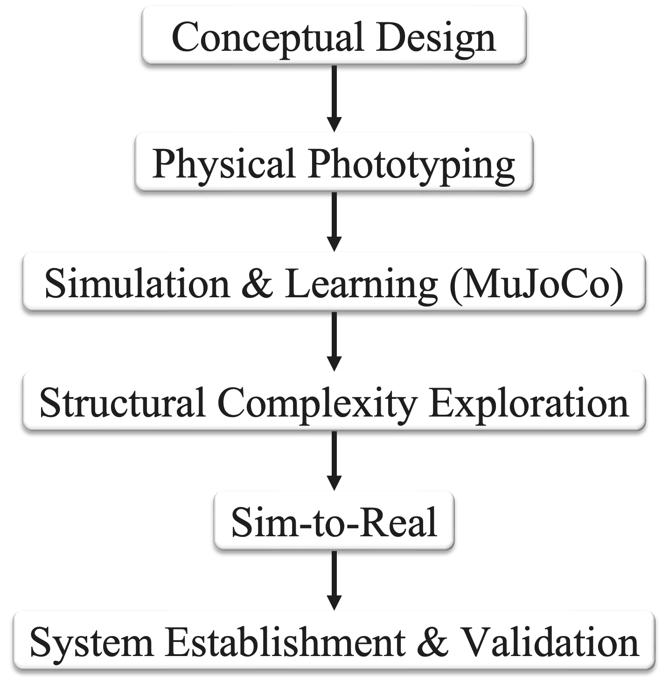

Our comprehensive research approach follows a systematic six-stage development pipeline, designed to progressively advance from theoretical concepts to real-world implementation. This methodology ensures rigorous validation at each stage while maintaining scientific rigor throughout the development process.

Comprehensive research development pipeline showing the systematic progression from conceptual design through to system validation. Current progress: Conceptual Design stage completed.
We have successfully completed the Conceptual Design stage, which serves as the foundation for all subsequent research stages. This stage established the fundamental geometric transformation principles and theoretical framework that will guide the entire development process.
Research Pipeline Stages:
Stage 1 - Conceptual Design (✅ Completed): Fundamental geometric transformations, 3D-to-2D structural transitions, and theoretical framework establishment.
Stage 2 - Physical Prototyping (🔄 Next Stage): Development of physical modular components and validation of transformation mechanisms.
Stage 3 - Simulation & Learning (MuJoCo): Computational modeling, behavior simulation, and machine learning integration for autonomous assembly.
Stage 4 - Structural Complexity Exploration: Investigation of advanced configurations and adaptive structural variations.
Stage 5 - Sim-to-Real: Translation of simulation results to physical robotic systems with real-world validation.
Stage 6 - System Establishment & Validation: Complete system integration, performance evaluation, and comprehensive validation testing.